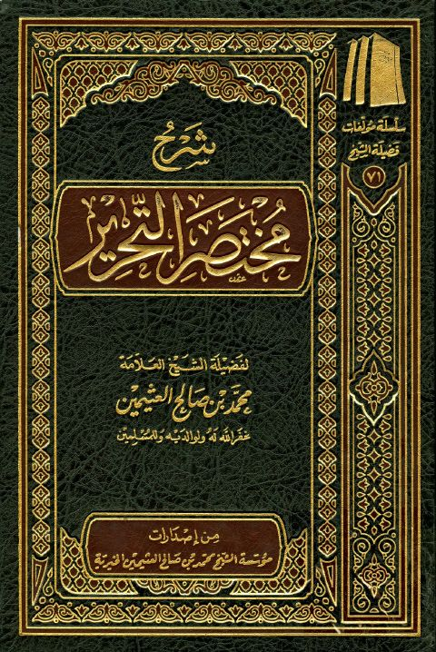
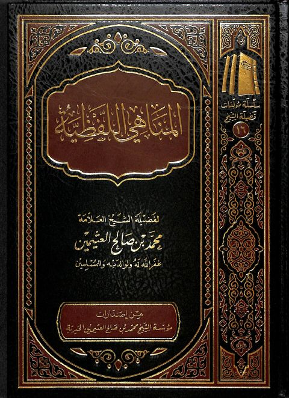
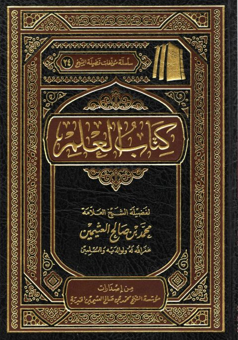
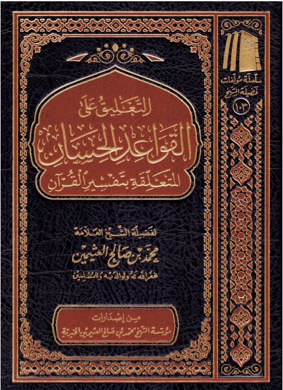
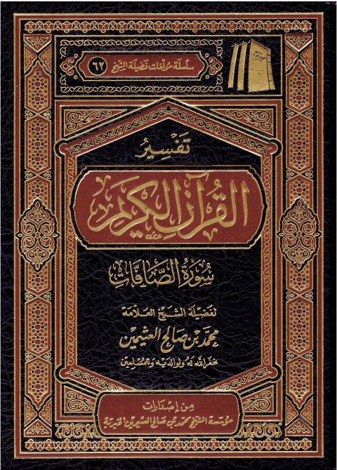
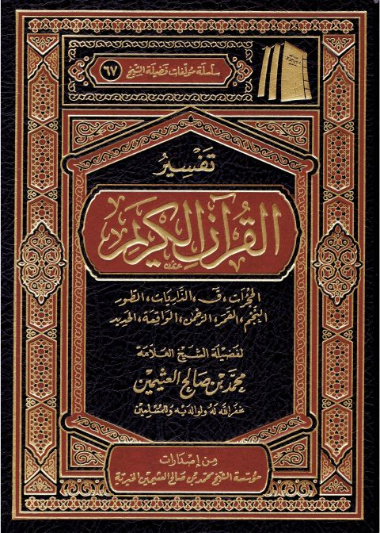
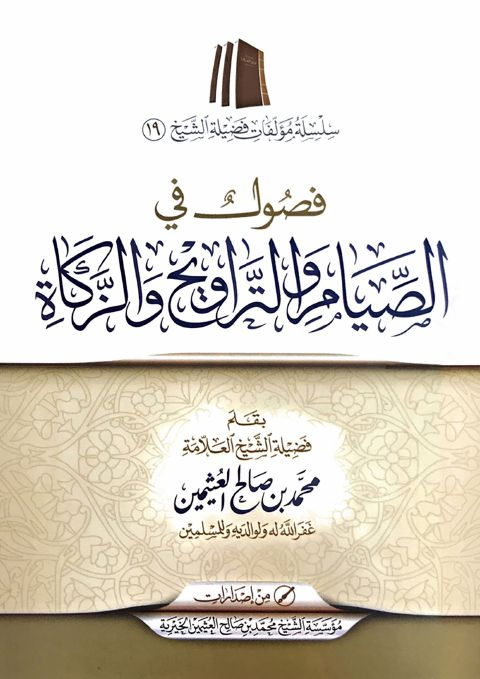

مؤسسة محمد بن صالح العثيمين الخيرية
Publisher
Resources

شرح مختصر التحرير شرح مختصر التحرير محمد بن صالح العثيمين
المناهي اللفظية المناهي اللفظية محمد بن صالح العثيمين
كتاب العلم- ط 9 كتاب العلم- ط 9 محمد بن صالح العثيمين
التعليق على القواعد الحسان المتعلقة بتفسير القرآن التعليق على القواعد الحسان المتعلقة بتفسير القرآن محمد بن صالح العثيمين تفسير سورة الكهف
تفسير سورة الكهف
محمد بن صالح العثيمين
تفسير سورة الكهف
تفسير سورة الكهف
محمد بن صالح العثيمين
 تفسير القرآن الكريم جزء عمَّ
تفسير القرآن الكريم جزء عمَّ
محمد بن صالح العثيمين
تفسير القرآن الكريم جزء عمَّ
تفسير القرآن الكريم جزء عمَّ
محمد بن صالح العثيمين

تفسير القرآن الكريم سورة الصافات تفسير القرآن الكريم سورة الصافات محمد بن صالح العثيمين
تفسير القرآن الكريم الحجرات، ق، الذاريات، الطور، النجم، القمر، الرحمن، الواقعة، الحديد تفسير القرآن الكريم الحجرات، ق، الذاريات، الطور، النجم، القمر، الرحمن، الواقعة، الحديد محمد بن صالح العثيمين
فصول في الصيام والتراويح والزكاة فصول في الصيام والتراويح والزكاة محمد بن صالح العثيمين